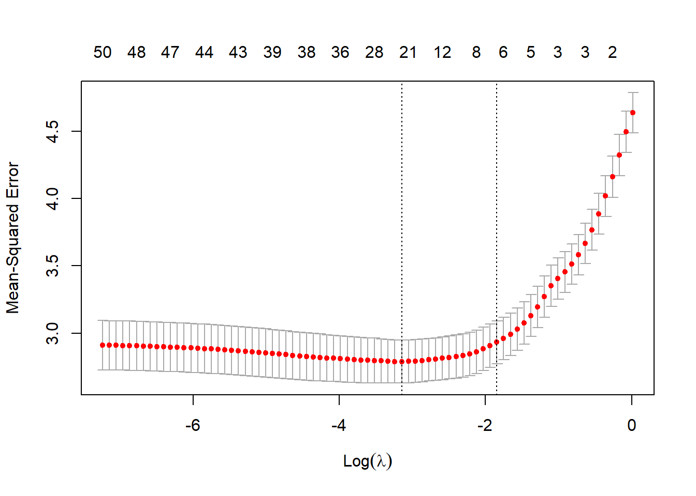
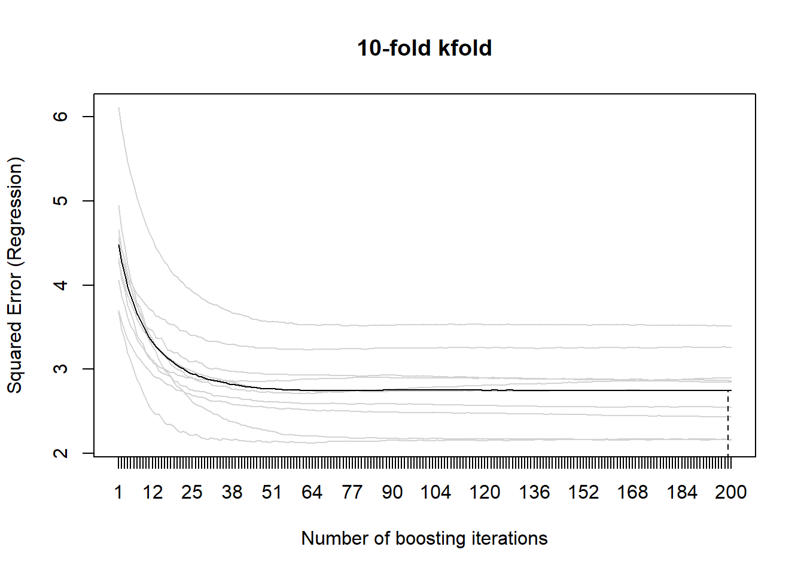
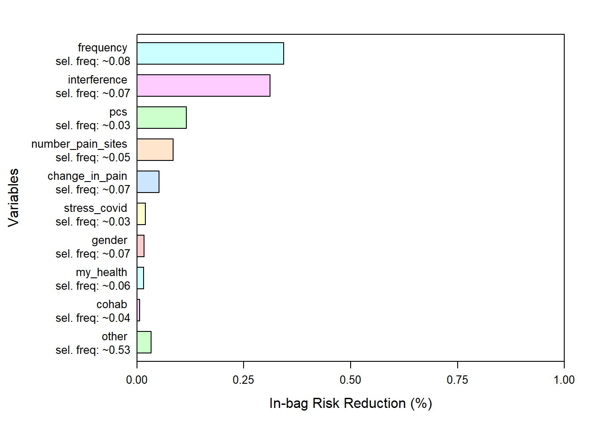

Last updated: 2021-07-16
Checks: 7 0
Knit directory: covidPain/
This reproducible R Markdown analysis was created with workflowr (version 1.6.2). The Checks tab describes the reproducibility checks that were applied when the results were created. The Past versions tab lists the development history.
Great! Since the R Markdown file has been committed to the Git repository, you know the exact version of the code that produced these results.
Great job! The global environment was empty. Objects defined in the global environment can affect the analysis in your R Markdown file in unknown ways. For reproduciblity it’s best to always run the code in an empty environment.
The command set.seed(20210714) was run prior to running the code in the R Markdown file. Setting a seed ensures that any results that rely on randomness, e.g. subsampling or permutations, are reproducible.
Great job! Recording the operating system, R version, and package versions is critical for reproducibility.
Nice! There were no cached chunks for this analysis, so you can be confident that you successfully produced the results during this run.
Great job! Using relative paths to the files within your workflowr project makes it easier to run your code on other machines.
Great! You are using Git for version control. Tracking code development and connecting the code version to the results is critical for reproducibility.
The results in this page were generated with repository version b8a5548. See the Past versions tab to see a history of the changes made to the R Markdown and HTML files.
Note that you need to be careful to ensure that all relevant files for the analysis have been committed to Git prior to generating the results (you can use wflow_publish or wflow_git_commit). workflowr only checks the R Markdown file, but you know if there are other scripts or data files that it depends on. Below is the status of the Git repository when the results were generated:
Ignored files:
Ignored: .Rproj.user/
Untracked files:
Untracked: data/data.xlsx
Untracked: output/report.html
Untracked: output/report_files/
Unstaged changes:
Modified: .gitignore
Note that any generated files, e.g. HTML, png, CSS, etc., are not included in this status report because it is ok for generated content to have uncommitted changes.
These are the previous versions of the repository in which changes were made to the R Markdown (analysis/1-explore.Rmd) and HTML (docs/1-explore.html) files. If you’ve configured a remote Git repository (see ?wflow_git_remote), click on the hyperlinks in the table below to view the files as they were in that past version.
| File | Version | Author | Date | Message |
|---|---|---|---|---|
| Rmd | b8a5548 | Bernard | 2021-07-16 | quick analysis |
library (tidyverse)
library (skimr)
library (DataExplorer)
library (dataPreparation)
library (glmnet)
library (mboost)
library (selectiveInference)
library (gglasso)df <- rio::import ("data/data.xlsx", sheet = "X-Sect data (data transformed)")
skim (df)| Name | df |
| Number of rows | 648 |
| Number of columns | 113 |
| _______________________ | |
| Column type frequency: | |
| character | 25 |
| numeric | 87 |
| POSIXct | 1 |
| ________________________ | |
| Group variables | None |
Variable type: character
| skim_variable | n_missing | complete_rate | min | max | empty | n_unique | whitespace |
|---|---|---|---|---|---|---|---|
| Gender | 0 | 1.00 | 1 | 1 | 0 | 2 | 0 |
| Marital status | 0 | 1.00 | 6 | 8 | 0 | 4 | 0 |
| Education | 0 | 1.00 | 4 | 11 | 0 | 4 | 0 |
| Region | 0 | 1.00 | 7 | 26 | 0 | 16 | 0 |
| Chronic Diz | 490 | 0.24 | 3 | 64 | 0 | 29 | 0 |
| Comorbidities | 0 | 1.00 | 2 | 3 | 0 | 2 | 0 |
| Pain location | 0 | 1.00 | 4 | 58 | 0 | 224 | 0 |
| Pain duration | 0 | 1.00 | 3 | 5 | 0 | 4 | 0 |
| Chronicity | 0 | 1.00 | 5 | 7 | 0 | 2 | 0 |
| Frequency | 0 | 1.00 | 5 | 12 | 0 | 4 | 0 |
| Const/Episod | 0 | 1.00 | 8 | 8 | 0 | 2 | 0 |
| Change in pain | 0 | 1.00 | 8 | 17 | 0 | 6 | 0 |
| Evolution | 0 | 1.00 | 5 | 9 | 0 | 3 | 0 |
| Change in Tx | 0 | 1.00 | 2 | 3 | 0 | 2 | 0 |
| PCR+ | 0 | 1.00 | 2 | 3 | 0 | 2 | 0 |
| Sx/Exp COVID | 0 | 1.00 | 2 | 3 | 0 | 2 | 0 |
| Consult | 0 | 1.00 | 2 | 5 | 0 | 3 | 0 |
| Job | 0 | 1.00 | 7 | 34 | 0 | 10 | 0 |
| Unemployed | 0 | 1.00 | 2 | 3 | 0 | 2 | 0 |
| Job changes | 0 | 1.00 | 8 | 11 | 0 | 3 | 0 |
| Restrictions | 0 | 1.00 | 2 | 155 | 0 | 80 | 0 |
| Job restrictions | 0 | 1.00 | 2 | 2 | 0 | 2 | 0 |
| Health restrictions | 0 | 1.00 | 2 | 2 | 0 | 2 | 0 |
| Chiropractic | 0 | 1.00 | 2 | 36 | 0 | 4 | 0 |
| Length of chiro care | 0 | 1.00 | 2 | 5 | 0 | 4 | 0 |
Variable type: numeric
| skim_variable | n_missing | complete_rate | mean | sd | p0 | p25 | p50 | p75 | p100 | hist |
|---|---|---|---|---|---|---|---|---|---|---|
| ID | 0 | 1 | 359.93 | 210.59 | 1 | 181.75 | 354.5 | 546.25 | 723 | ▇▇▇▇▇ |
| Age | 0 | 1 | 46.97 | 12.51 | 17 | 38.00 | 47.0 | 56.00 | 87 | ▂▇▇▃▁ |
| Cohab | 0 | 1 | 1.81 | 1.04 | 0 | 1.00 | 2.0 | 3.00 | 3 | ▃▆▁▆▇ |
| # pain sites | 0 | 1 | 3.24 | 2.06 | 1 | 2.00 | 3.0 | 4.00 | 9 | ▇▇▂▁▁ |
| Pain intensity | 0 | 1 | 5.32 | 2.16 | 0 | 4.00 | 6.0 | 7.00 | 10 | ▃▅▇▇▁ |
| Int1 | 0 | 1 | 3.05 | 2.73 | 0 | 1.00 | 2.0 | 5.00 | 10 | ▇▂▂▂▁ |
| Int2 | 0 | 1 | 3.19 | 2.85 | 0 | 1.00 | 2.0 | 5.00 | 10 | ▇▂▂▂▁ |
| Int3 | 0 | 1 | 3.16 | 2.88 | 0 | 1.00 | 2.0 | 5.00 | 10 | ▇▂▂▂▁ |
| Int4 | 0 | 1 | 2.29 | 2.63 | 0 | 0.00 | 1.0 | 4.00 | 10 | ▇▂▂▁▁ |
| Int5 | 0 | 1 | 3.23 | 2.98 | 0 | 1.00 | 2.0 | 5.00 | 10 | ▇▂▂▂▁ |
| Int6 | 0 | 1 | 3.03 | 3.01 | 0 | 0.00 | 2.0 | 5.00 | 10 | ▇▂▂▂▁ |
| Interference | 0 | 1 | 17.95 | 15.37 | 0 | 5.00 | 14.0 | 30.00 | 60 | ▇▃▃▂▁ |
| pcs1 | 0 | 1 | 1.29 | 1.02 | 0 | 0.00 | 1.0 | 2.00 | 4 | ▆▅▇▂▁ |
| pcs2 | 0 | 1 | 1.78 | 0.97 | 0 | 1.00 | 2.0 | 2.00 | 4 | ▂▃▇▂▁ |
| pcs3 | 0 | 1 | 1.32 | 0.97 | 0 | 1.00 | 1.0 | 2.00 | 4 | ▅▇▇▂▁ |
| pcs4 | 0 | 1 | 2.39 | 1.17 | 0 | 2.00 | 2.0 | 3.00 | 4 | ▂▃▇▆▅ |
| PCS | 0 | 1 | 6.77 | 3.28 | 0 | 4.00 | 7.0 | 9.00 | 15 | ▅▇▇▃▁ |
| tsk1 | 0 | 1 | 2.41 | 0.96 | 1 | 2.00 | 3.0 | 3.00 | 4 | ▅▆▁▇▂ |
| tsk2 | 0 | 1 | 2.68 | 0.90 | 1 | 2.00 | 3.0 | 3.00 | 4 | ▂▃▁▇▃ |
| tsk3 | 0 | 1 | 2.27 | 0.84 | 1 | 2.00 | 2.0 | 3.00 | 4 | ▃▇▁▆▁ |
| tsk4 | 0 | 1 | 2.59 | 0.79 | 1 | 2.00 | 3.0 | 3.00 | 4 | ▂▅▁▇▂ |
| tsk5 | 0 | 1 | 2.38 | 0.89 | 1 | 2.00 | 2.0 | 3.00 | 4 | ▃▆▁▇▂ |
| tsk6 | 0 | 1 | 2.52 | 0.84 | 1 | 2.00 | 3.0 | 3.00 | 4 | ▂▆▁▇▂ |
| tsk7 | 0 | 1 | 2.15 | 0.80 | 1 | 2.00 | 2.0 | 3.00 | 4 | ▃▇▁▅▁ |
| tsk8 | 0 | 1 | 2.79 | 0.72 | 1 | 2.00 | 3.0 | 3.00 | 4 | ▁▃▁▇▂ |
| tsk9 | 0 | 1 | 1.70 | 0.67 | 1 | 1.00 | 2.0 | 2.00 | 4 | ▆▇▁▁▁ |
| tsk10 | 0 | 1 | 2.08 | 0.86 | 1 | 1.00 | 2.0 | 3.00 | 4 | ▆▇▁▆▁ |
| tsk11 | 0 | 1 | 1.96 | 0.71 | 1 | 1.00 | 2.0 | 2.00 | 4 | ▃▇▁▂▁ |
| TSK | 0 | 1 | 25.53 | 5.54 | 11 | 22.00 | 26.0 | 29.00 | 43 | ▂▃▇▂▁ |
| Sad | 0 | 1 | 4.56 | 3.13 | 0 | 2.00 | 5.0 | 7.00 | 10 | ▇▃▅▅▃ |
| Worry | 0 | 1 | 5.49 | 3.06 | 0 | 2.00 | 6.0 | 8.00 | 10 | ▇▃▆▇▆ |
| Lonely | 0 | 1 | 2.02 | 2.60 | 0 | 0.00 | 1.0 | 3.00 | 10 | ▇▂▁▁▁ |
| Anger | 0 | 1 | 4.21 | 3.30 | 0 | 1.00 | 4.0 | 7.00 | 10 | ▇▂▃▃▂ |
| Helpless | 0 | 1 | 5.07 | 3.39 | 0 | 2.00 | 5.0 | 8.00 | 10 | ▇▂▃▅▅ |
| Anxiety | 0 | 1 | 3.19 | 3.10 | 0 | 0.00 | 2.0 | 6.00 | 10 | ▇▂▂▂▁ |
| Surprise | 0 | 1 | 2.56 | 2.81 | 0 | 0.00 | 2.0 | 5.00 | 10 | ▇▂▂▂▁ |
| Relief | 0 | 1 | 1.70 | 2.30 | 0 | 0.00 | 1.0 | 3.00 | 10 | ▇▁▁▁▁ |
| Hope | 0 | 1 | 4.34 | 3.11 | 0 | 2.00 | 4.0 | 7.00 | 10 | ▇▃▅▃▃ |
| Stress covid | 0 | 1 | 7.05 | 2.53 | 0 | 6.00 | 8.0 | 9.00 | 10 | ▂▂▃▇▆ |
| Stress rest | 0 | 1 | 6.51 | 2.53 | 0 | 5.00 | 7.0 | 8.00 | 10 | ▂▃▆▇▆ |
| My health | 0 | 1 | 4.69 | 3.34 | 0 | 1.00 | 5.0 | 8.00 | 10 | ▇▃▅▃▃ |
| Economy | 0 | 1 | 4.33 | 3.39 | 0 | 1.00 | 4.0 | 7.00 | 10 | ▇▂▃▃▃ |
| Food | 0 | 1 | 2.07 | 2.57 | 0 | 0.00 | 1.0 | 4.00 | 10 | ▇▂▂▁▁ |
| Resources | 0 | 1 | 2.08 | 2.52 | 0 | 0.00 | 1.0 | 3.00 | 10 | ▇▂▂▁▁ |
| Loved ones | 0 | 1 | 7.13 | 3.18 | 0 | 5.00 | 8.0 | 10.00 | 10 | ▃▁▂▃▇ |
| gad1 | 0 | 1 | 0.95 | 0.89 | 0 | 0.00 | 1.0 | 1.00 | 3 | ▆▇▁▂▂ |
| gad2 | 0 | 1 | 0.72 | 0.79 | 0 | 0.00 | 1.0 | 1.00 | 3 | ▇▇▁▁▁ |
| gad3 | 0 | 1 | 0.82 | 0.80 | 0 | 0.00 | 1.0 | 1.00 | 3 | ▆▇▁▂▁ |
| gad4 | 0 | 1 | 0.94 | 0.86 | 0 | 0.00 | 1.0 | 1.00 | 3 | ▅▇▁▂▁ |
| gad5 | 0 | 1 | 0.56 | 0.77 | 0 | 0.00 | 0.0 | 1.00 | 3 | ▇▅▁▁▁ |
| gad6 | 0 | 1 | 0.90 | 0.76 | 0 | 0.00 | 1.0 | 1.00 | 3 | ▅▇▁▁▁ |
| gad7 | 0 | 1 | 0.54 | 0.68 | 0 | 0.00 | 0.0 | 1.00 | 3 | ▇▆▁▁▁ |
| GAD | 0 | 1 | 5.45 | 4.30 | 0 | 2.00 | 5.0 | 7.00 | 21 | ▇▆▂▁▁ |
| iou1 | 0 | 1 | 2.79 | 1.23 | 1 | 2.00 | 3.0 | 4.00 | 5 | ▅▇▇▅▃ |
| iou2 | 0 | 1 | 3.00 | 1.26 | 1 | 2.00 | 3.0 | 4.00 | 5 | ▅▇▇▇▅ |
| iou3 | 0 | 1 | 2.83 | 1.25 | 1 | 2.00 | 3.0 | 4.00 | 5 | ▅▇▇▅▃ |
| iou4 | 0 | 1 | 2.53 | 1.26 | 1 | 2.00 | 2.0 | 3.00 | 5 | ▆▇▆▃▂ |
| iou5 | 0 | 1 | 2.38 | 1.23 | 1 | 1.00 | 2.0 | 3.00 | 5 | ▇▇▅▃▂ |
| iou6 | 0 | 1 | 2.41 | 1.20 | 1 | 1.00 | 2.0 | 3.00 | 5 | ▆▇▅▃▂ |
| iou7 | 0 | 1 | 2.61 | 1.23 | 1 | 2.00 | 2.0 | 4.00 | 5 | ▆▇▇▅▂ |
| iou8 | 0 | 1 | 2.31 | 1.24 | 1 | 1.00 | 2.0 | 3.00 | 5 | ▇▇▅▃▂ |
| iou9 | 0 | 1 | 1.90 | 1.11 | 1 | 1.00 | 2.0 | 2.00 | 5 | ▇▅▂▁▁ |
| iou10 | 0 | 1 | 2.44 | 1.19 | 1 | 2.00 | 2.0 | 3.00 | 5 | ▆▇▆▃▂ |
| iou11 | 0 | 1 | 1.94 | 1.07 | 1 | 1.00 | 2.0 | 2.00 | 5 | ▇▆▂▂▁ |
| iou12 | 0 | 1 | 2.03 | 1.09 | 1 | 1.00 | 2.0 | 3.00 | 5 | ▇▆▃▂▁ |
| IOUS | 0 | 1 | 29.17 | 10.19 | 12 | 21.00 | 28.0 | 36.00 | 60 | ▆▇▅▃▁ |
| se1 | 0 | 1 | 6.62 | 2.17 | 1 | 5.00 | 7.0 | 8.00 | 10 | ▁▂▆▇▃ |
| se2 | 0 | 1 | 8.07 | 1.65 | 1 | 7.00 | 8.0 | 9.00 | 10 | ▁▁▂▇▇ |
| se3 | 0 | 1 | 7.55 | 1.81 | 1 | 7.00 | 8.0 | 9.00 | 10 | ▁▁▃▇▆ |
| se4 | 0 | 1 | 7.50 | 1.74 | 1 | 7.00 | 8.0 | 9.00 | 10 | ▁▁▃▇▅ |
| se5 | 0 | 1 | 7.59 | 1.66 | 1 | 7.00 | 8.0 | 9.00 | 10 | ▁▁▃▇▅ |
| se6 | 0 | 1 | 6.85 | 1.86 | 1 | 6.00 | 7.0 | 8.00 | 10 | ▁▂▆▇▃ |
| se7 | 0 | 1 | 7.11 | 1.73 | 1 | 6.00 | 7.0 | 8.00 | 10 | ▁▁▅▇▃ |
| se8 | 0 | 1 | 7.66 | 1.66 | 1 | 7.00 | 8.0 | 9.00 | 10 | ▁▁▃▇▆ |
| se9 | 0 | 1 | 7.38 | 1.64 | 1 | 6.00 | 8.0 | 9.00 | 10 | ▁▁▃▇▅ |
| se10 | 0 | 1 | 7.29 | 1.76 | 1 | 6.00 | 8.0 | 9.00 | 10 | ▁▁▅▇▅ |
| SE | 0 | 1 | 73.62 | 14.15 | 10 | 65.00 | 74.0 | 84.00 | 100 | ▁▁▃▇▅ |
| five1 | 0 | 1 | 3.56 | 0.60 | 1 | 3.00 | 4.0 | 4.00 | 4 | ▁▁▁▅▇ |
| five2 | 0 | 1 | 3.59 | 0.61 | 1 | 3.00 | 4.0 | 4.00 | 4 | ▁▁▁▃▇ |
| five3 | 0 | 1 | 3.15 | 0.91 | 1 | 3.00 | 3.0 | 4.00 | 4 | ▁▃▁▆▇ |
| five4 | 0 | 1 | 3.12 | 0.99 | 1 | 2.00 | 3.0 | 4.00 | 4 | ▂▃▁▅▇ |
| five5 | 0 | 1 | 2.93 | 0.96 | 1 | 2.00 | 3.0 | 4.00 | 4 | ▂▅▁▇▇ |
| five6 | 0 | 1 | 2.89 | 0.91 | 1 | 2.00 | 3.0 | 4.00 | 4 | ▂▅▁▇▆ |
| five7 | 0 | 1 | 3.03 | 0.88 | 1 | 2.00 | 3.0 | 4.00 | 4 | ▁▅▁▇▇ |
| five8 | 0 | 1 | 2.88 | 1.03 | 1 | 2.00 | 3.0 | 4.00 | 4 | ▂▆▁▆▇ |
| five9 | 0 | 1 | 3.14 | 0.79 | 1 | 3.00 | 3.0 | 4.00 | 4 | ▁▃▁▇▇ |
| five10 | 0 | 1 | 3.20 | 0.74 | 1 | 3.00 | 3.0 | 4.00 | 4 | ▁▂▁▇▆ |
Variable type: POSIXct
| skim_variable | n_missing | complete_rate | min | max | median | n_unique |
|---|---|---|---|---|---|---|
| Time | 0 | 1 | 2020-02-05 17:16:39 | 2020-11-05 23:40:21 | 2020-05-07 22:40:33 | 648 |
names (df) <- janitor::make_clean_names(names (df))
df <- df%>%
dplyr::select (-c (region, chronic_diz, time, id))
sum (is.na (df))[1] 0df %>%
dplyr::select_if(is.character) %>%
map_dbl (n_distinct) gender marital_status education
2 4 4
comorbidities pain_location pain_duration
2 224 4
chronicity frequency const_episod
2 4 2
change_in_pain evolution change_in_tx
6 3 2
pcr sx_exp_covid consult
2 2 3
job unemployed job_changes
10 2 3
restrictions job_restrictions health_restrictions
80 2 2
chiropractic length_of_chiro_care
4 4 df %>%
dplyr::select(restrictions) %>%
unique() restrictions
1 School closure, Reduced access to healthcare
2 Home confinement
7 School closure, Remote work, Reduced access to healthcare, Home confinement
10 Job loss, Reduced access to healthcare
11 Reduced access to healthcare, Reduced healthcare provision for chronic conditions, Home confinement
13 School closure, Reduced access to healthcare, Reduced healthcare provision for chronic conditions, Home confinement
17 Job loss, Home confinement
18 Reduced access to healthcare, Home confinement
23 Remote work
24 Remote work, Reduced access to healthcare
25 School closure, Reduced healthcare provision for chronic conditions, Home confinement
26 Job loss
28 School closure, Remote work, Home confinement
30 School closure, Remote work
33 Reduced access to healthcare, Reduced quality of healthcare provision
34 Remote work, Reduced access to healthcare, Home confinement
35 Remote work, Home confinement
36 School closure
37 School closure, Reduced access to healthcare, Home confinement
40 Reduced access to healthcare, Reduced healthcare provision for chronic conditions
49 Remote work, Reduced healthcare provision for chronic conditions, Home confinement
57 School closure, Job loss, Home confinement, Outdoors
58 Job loss, Reduced access to healthcare, Reduced healthcare provision for chronic conditions, Reduced help from caregivers, Home confinement
60 Reduced help from caregivers, Home confinement
64 School closure, Job loss
66 Reduced access to healthcare
67 Job loss, Reduced access to healthcare, Home confinement, Outdoors
75 Reduced healthcare provision for chronic conditions
77 Remote work, Reduced access to healthcare, Reduced healthcare provision for chronic conditions, Home confinement
84 School closure, Home confinement
88 School closure, Reduced access to healthcare, Reduced healthcare provision for chronic conditions
93 School closure, Remote work, Reduced access to healthcare
95 Job loss, Reduced access to healthcare, Outdoors
105 School closure, Remote work, Job loss, Reduced access to healthcare, Home confinement
107 School closure, Home confinement, Job loss
109 Reduced access to healthcare, Reduced help from caregivers, Home confinement
112 Reduced access to healthcare, Reduced help from caregivers
117 Reduced access to healthcare, Home confinement, Job loss
122 School closure, Job loss, Reduced access to healthcare, Home confinement
125 No
133 Reduced help from caregivers
147 School closure, Remote work, Reduced access to healthcare, Reduced healthcare provision for chronic conditions, Home confinement
156 Job loss, Reduced access to healthcare, Home confinement
174 Remote work, Reduced access to healthcare, Reduced healthcare provision for chronic conditions
177 Reduced healthcare provision for chronic conditions, Home confinement
184 School closure, Remote work, Job loss, Home confinement
194 Disponer de más tiempo (en positivo)
206 Job loss, Reduced access to healthcare, Reduced help from caregivers, Home confinement
208 Job loss, Reduced access to healthcare, Reduced healthcare provision for chronic conditions
220 School closure, Reduced help from caregivers
226 Remote work, Reduced access to healthcare, Reduced help from caregivers, Home confinement
227 Reduced access to healthcare, Home confinement, Sobreinformación
241 School closure, Job loss, Reduced access to healthcare, Reduced healthcare provision for chronic conditions, Reduced help from caregivers, Home confinement
266 Remote work, Reduced help from caregivers
269 School closure, Job loss, Reduced help from caregivers, Home confinement
277 School closure, Reduced access to healthcare, Reduced healthcare provision for chronic conditions, Reduced help from caregivers
280 Job loss, Reduced access to healthcare, Reduced healthcare provision for chronic conditions, Home confinement
302 Remote work, Home confinement, Outdoors
305 School closure, Remote work, Reduced access to healthcare, Reduced healthcare provision for chronic conditions
334 School closure, Remote work, Reduced healthcare provision for chronic conditions
344 Reduced access to healthcare, Reduced healthcare provision for chronic conditions, Reduced help from caregivers, Home confinement
345 Remote work, Job loss, Reduced access to healthcare, Reduced healthcare provision for chronic conditions, Reduced help from caregivers, Home confinement
354 Job loss, Reduced healthcare provision for chronic conditions, Home confinement
361 Reduced healthcare provision for chronic conditions, Reduced help from caregivers
371 Reduced access to healthcare, Home confinement, Outdoors
381 School closure, Job loss, Reduced access to healthcare
404 Remote work, Job loss, Reduced access to healthcare, Home confinement
418 School closure, Reduced access to healthcare, Reduced help from caregivers
426 School closure, Reduced access to healthcare, Reduced help from caregivers, Home confinement
428 Remote work, Reduced healthcare provision for chronic conditions
481 School closure, Reduced help from caregivers, Home confinement
482 Remote work, Reduced help from caregivers, Home confinement
513 Reduced access to healthcare, Reduced healthcare provision for chronic conditions, Reduced help from caregivers
534 School closure, Job loss, Home confinement
549 Reduced healthcare provision for chronic conditions, Reduced help from caregivers, Home confinement
581 School closure, Reduced healthcare provision for chronic conditions
586 Remote work, Job loss
631 School closure, Reduced access to healthcare, Reduced healthcare provision for chronic conditions, Reduced help from caregivers, Home confinement
632 School closure, Reduced access to healthcare, Reduced healthcare provision for chronic conditions, Reduced help from caregivers, Job loss
641 Remote work, Reduced access to healthcare, Reduced healthcare provision for chronic conditions, Reduced help from caregivers, Home confinementdf %>%
dplyr::select(job) %>%
unique() job
1 Sick-leave
2 Full-time job
5 Part-time job
10 Unemployed
11 Retired
13 Self-employed
18 Student
19 Invalidez derivada de otras causas
20 Housewife/husband
177 Temporary or permanent disabilitydf <- df %>%
dplyr::select (-c(pain_location, restrictions))
ind_items <- grepl ("([0-9]+)", names(df))
df <- df[, !ind_items]
names(df) [1] "age" "gender" "marital_status"
[4] "cohab" "education" "comorbidities"
[7] "number_pain_sites" "pain_intensity" "pain_duration"
[10] "chronicity" "frequency" "const_episod"
[13] "change_in_pain" "evolution" "interference"
[16] "change_in_tx" "pcs" "tsk"
[19] "pcr" "sx_exp_covid" "consult"
[22] "job" "unemployed" "job_changes"
[25] "job_restrictions" "health_restrictions" "sad"
[28] "worry" "lonely" "anger"
[31] "helpless" "anxiety" "surprise"
[34] "relief" "hope" "stress_covid"
[37] "stress_rest" "my_health" "economy"
[40] "food" "resources" "loved_ones"
[43] "gad" "ious" "se"
[46] "chiropractic" "length_of_chiro_care"df <- df %>%
dplyr::select (-c(sx_exp_covid, job_restrictions, unemployed, pcr, consult, const_episod)) %>%
mutate (marital_status = ifelse (marital_status == "Married", "0", "1"),
education = ifelse (education == "University", "0", "1"),
job = ifelse (job == "Full-time job", "0", "1"),
change_in_pain = ifelse (grepl("improve", change_in_pain), "improve",
ifelse (grepl("worse", change_in_pain), "worse", change_in_pain)),
chiropractic = ifelse (grepl("Yes", chiropractic), "yes", "no"),
length_of_chiro_care = ifelse (length_of_chiro_care == ">12M", "over1y", "under1y"),
pain_duration = ifelse (pain_duration == ">12M", "over1y", "under1y"),
evolution = ifelse (evolution == "Worse", "0", "1"))
skim (df)| Name | df |
| Number of rows | 648 |
| Number of columns | 41 |
| _______________________ | |
| Column type frequency: | |
| character | 15 |
| numeric | 26 |
| ________________________ | |
| Group variables | None |
Variable type: character
| skim_variable | n_missing | complete_rate | min | max | empty | n_unique | whitespace |
|---|---|---|---|---|---|---|---|
| gender | 0 | 1 | 1 | 1 | 0 | 2 | 0 |
| marital_status | 0 | 1 | 1 | 1 | 0 | 2 | 0 |
| education | 0 | 1 | 1 | 1 | 0 | 2 | 0 |
| comorbidities | 0 | 1 | 2 | 3 | 0 | 2 | 0 |
| pain_duration | 0 | 1 | 6 | 7 | 0 | 2 | 0 |
| chronicity | 0 | 1 | 5 | 7 | 0 | 2 | 0 |
| frequency | 0 | 1 | 5 | 12 | 0 | 4 | 0 |
| change_in_pain | 0 | 1 | 5 | 9 | 0 | 4 | 0 |
| evolution | 0 | 1 | 1 | 1 | 0 | 2 | 0 |
| change_in_tx | 0 | 1 | 2 | 3 | 0 | 2 | 0 |
| job | 0 | 1 | 1 | 1 | 0 | 2 | 0 |
| job_changes | 0 | 1 | 8 | 11 | 0 | 3 | 0 |
| health_restrictions | 0 | 1 | 2 | 2 | 0 | 2 | 0 |
| chiropractic | 0 | 1 | 2 | 3 | 0 | 2 | 0 |
| length_of_chiro_care | 0 | 1 | 6 | 7 | 0 | 2 | 0 |
Variable type: numeric
| skim_variable | n_missing | complete_rate | mean | sd | p0 | p25 | p50 | p75 | p100 | hist |
|---|---|---|---|---|---|---|---|---|---|---|
| age | 0 | 1 | 46.97 | 12.51 | 17 | 38 | 47 | 56 | 87 | ▂▇▇▃▁ |
| cohab | 0 | 1 | 1.81 | 1.04 | 0 | 1 | 2 | 3 | 3 | ▃▆▁▆▇ |
| number_pain_sites | 0 | 1 | 3.24 | 2.06 | 1 | 2 | 3 | 4 | 9 | ▇▇▂▁▁ |
| pain_intensity | 0 | 1 | 5.32 | 2.16 | 0 | 4 | 6 | 7 | 10 | ▃▅▇▇▁ |
| interference | 0 | 1 | 17.95 | 15.37 | 0 | 5 | 14 | 30 | 60 | ▇▃▃▂▁ |
| pcs | 0 | 1 | 6.77 | 3.28 | 0 | 4 | 7 | 9 | 15 | ▅▇▇▃▁ |
| tsk | 0 | 1 | 25.53 | 5.54 | 11 | 22 | 26 | 29 | 43 | ▂▃▇▂▁ |
| sad | 0 | 1 | 4.56 | 3.13 | 0 | 2 | 5 | 7 | 10 | ▇▃▅▅▃ |
| worry | 0 | 1 | 5.49 | 3.06 | 0 | 2 | 6 | 8 | 10 | ▇▃▆▇▆ |
| lonely | 0 | 1 | 2.02 | 2.60 | 0 | 0 | 1 | 3 | 10 | ▇▂▁▁▁ |
| anger | 0 | 1 | 4.21 | 3.30 | 0 | 1 | 4 | 7 | 10 | ▇▂▃▃▂ |
| helpless | 0 | 1 | 5.07 | 3.39 | 0 | 2 | 5 | 8 | 10 | ▇▂▃▅▅ |
| anxiety | 0 | 1 | 3.19 | 3.10 | 0 | 0 | 2 | 6 | 10 | ▇▂▂▂▁ |
| surprise | 0 | 1 | 2.56 | 2.81 | 0 | 0 | 2 | 5 | 10 | ▇▂▂▂▁ |
| relief | 0 | 1 | 1.70 | 2.30 | 0 | 0 | 1 | 3 | 10 | ▇▁▁▁▁ |
| hope | 0 | 1 | 4.34 | 3.11 | 0 | 2 | 4 | 7 | 10 | ▇▃▅▃▃ |
| stress_covid | 0 | 1 | 7.05 | 2.53 | 0 | 6 | 8 | 9 | 10 | ▂▂▃▇▆ |
| stress_rest | 0 | 1 | 6.51 | 2.53 | 0 | 5 | 7 | 8 | 10 | ▂▃▆▇▆ |
| my_health | 0 | 1 | 4.69 | 3.34 | 0 | 1 | 5 | 8 | 10 | ▇▃▅▃▃ |
| economy | 0 | 1 | 4.33 | 3.39 | 0 | 1 | 4 | 7 | 10 | ▇▂▃▃▃ |
| food | 0 | 1 | 2.07 | 2.57 | 0 | 0 | 1 | 4 | 10 | ▇▂▂▁▁ |
| resources | 0 | 1 | 2.08 | 2.52 | 0 | 0 | 1 | 3 | 10 | ▇▂▂▁▁ |
| loved_ones | 0 | 1 | 7.13 | 3.18 | 0 | 5 | 8 | 10 | 10 | ▃▁▂▃▇ |
| gad | 0 | 1 | 5.45 | 4.30 | 0 | 2 | 5 | 7 | 21 | ▇▆▂▁▁ |
| ious | 0 | 1 | 29.17 | 10.19 | 12 | 21 | 28 | 36 | 60 | ▆▇▅▃▁ |
| se | 0 | 1 | 73.62 | 14.15 | 10 | 65 | 74 | 84 | 100 | ▁▁▃▇▅ |
create_report(df,
output_dir = "output/")Y <- as.matrix (df$pain_intensity)
X <- df %>%
as.data.frame() %>%
dplyr::select (-pain_intensity) %>%
modify_if(is.numeric, scale, TRUE, TRUE) %>%
makeX()
set.seed(42)
cvl1 <- cv.glmnet(x = X,
y = Y,
family="gaussian",
nfolds = 10,
standardize = FALSE,
intercept = TRUE)
plot(cvl1)
lambda <- cvl1$lambda.min
coef(cvl1 , s = lambda)61 x 1 sparse Matrix of class "dgCMatrix"
s1
(Intercept) 5.583389e+00
age 4.489535e-02
genderH -1.856512e-01
genderM 1.170440e-13
marital_status0 .
marital_status1 .
cohab 9.204133e-02
education0 .
education1 .
comorbiditiesNo .
comorbiditiesYes .
number_pain_sites 2.934584e-01
pain_durationover1y .
pain_durationunder1y .
chronicityAcute .
chronicityChronic .
frequencyConstantly 7.563742e-02
frequencyDaily .
frequencyOccasionally -1.105727e+00
frequencyWeekly .
change_in_painimprove .
change_in_painNew pain .
change_in_painNo change .
change_in_painworse 3.502607e-01
evolution0 2.545023e-02
evolution1 .
interference 5.563290e-01
change_in_txNo .
change_in_txYes .
pcs 2.441676e-01
tsk .
job0 .
job1 .
job_changesJob loss .
job_changesNo changes .
job_changesRemote work .
health_restrictionsNo .
health_restrictionsSí .
sad 4.967057e-02
worry .
lonely 2.803217e-02
anger -1.164494e-01
helpless .
anxiety .
surprise .
relief -1.603224e-02
hope -2.171712e-02
stress_covid 1.136423e-01
stress_rest 2.017821e-02
my_health 1.320251e-01
economy .
food .
resources .
loved_ones .
gad .
ious -7.185346e-03
se 7.089972e-02
chiropracticno .
chiropracticyes .
length_of_chiro_careover1y -1.280403e-02
length_of_chiro_careunder1y 3.133816e-15las <- glmnet(x = X,
y = Y,
family="gaussian",
lambda = lambda,
standardize = FALSE,
intercept = TRUE)
beta <- coef(las , s = lambda/nrow(df))[-1]
m <- fixedLassoInf (x = X,
y = Y,
beta = beta,
lambda = lambda)Warning in fixedLassoInf(x = X, y = Y, beta = beta, lambda = lambda): Solution
beta does not satisfy the KKT conditions (to within specified tolerances)Warning in lsfit(x, y, intercept = oo): 'X' matrix was collinearm
Call:
fixedLassoInf(x = X, y = Y, beta = beta, lambda = lambda)
Standard deviation of noise (specified or estimated) sigma = 1.653
Testing results at lambda = 0.043, with alpha = 0.100
Var Coef Z-score P-value LowConfPt UpConfPt LowTailArea UpTailArea
1 0.127 1.802 0.072 -0.018 0.244 0.050 0.049
2 -0.345 -2.300 0.021 -0.593 -0.069 0.050 0.049
6 0.142 2.072 0.038 0.010 0.255 0.049 0.049
11 0.272 3.715 0.000 0.150 0.394 0.049 0.048
16 0.345 1.676 0.094 -0.099 0.686 0.049 0.048
18 -1.194 -7.763 0.000 -1.448 -0.940 0.049 0.049
23 0.364 1.673 0.089 -0.100 1.019 0.049 0.050
24 0.187 0.836 0.402 -0.656 0.592 0.049 0.050
26 0.576 6.827 0.000 0.436 0.715 0.049 0.049
29 0.217 2.619 0.009 0.072 0.354 0.049 0.049
38 0.150 1.468 0.142 -0.091 0.319 0.049 0.049
40 0.090 1.103 0.270 -0.151 0.222 0.049 0.049
41 -0.225 -2.496 0.013 -0.375 -0.065 0.049 0.050
45 -0.073 -0.911 0.363 -0.204 0.205 0.048 0.050
46 -0.092 -1.101 0.271 -0.234 0.154 0.049 0.050
47 0.091 1.033 0.298 -0.183 0.269 0.050 0.049
48 0.060 0.738 0.460 -0.279 0.193 0.050 0.050
49 0.187 2.257 0.024 0.035 0.323 0.050 0.049
55 -0.050 -0.659 0.510 -0.168 0.308 0.049 0.049
56 0.116 1.673 0.094 -0.033 0.230 0.050 0.050
59 -0.185 -1.325 0.186 -0.416 0.170 0.049 0.050
Note: coefficients shown are partial regression coefficientsX <- df %>%
as.data.frame() %>%
dplyr::select (-pain_intensity)
cat_lvls <- X %>%
map_dbl (~ifelse (is.character(.x), n_distinct (.x), 1))
grp <- rep (1:ncol (X), times = cat_lvls)
X <- X %>%
modify_if(is.numeric, scale, TRUE, TRUE) %>%
makeX()
lambdas_to_try <- 10^seq(-3, 5, length.out = 100)
cv <- cv.gglasso(x=X,
y=Y,
group=grp,
lambda = lambdas_to_try ,
loss="ls",
pred.loss="L2",
nfolds=5)
coef (cv, s = cv$lambda.min) 1
(Intercept) 5.346022793
age 0.054765139
genderH -0.120223632
genderM 0.120230065
marital_status0 0.000000000
marital_status1 0.000000000
cohab 0.102776238
education0 0.000000000
education1 0.000000000
comorbiditiesNo 0.000000000
comorbiditiesYes 0.000000000
number_pain_sites 0.292731818
pain_durationover1y 0.020718388
pain_durationunder1y -0.020718808
chronicityAcute 0.000000000
chronicityChronic 0.000000000
frequencyConstantly 0.417088029
frequencyDaily 0.265464739
frequencyOccasionally -0.770594558
frequencyWeekly 0.087842705
change_in_painimprove -0.007024646
change_in_painNew pain -0.025576602
change_in_painNo change -0.030283504
change_in_painworse 0.062874533
evolution0 0.142482008
evolution1 -0.142567806
interference 0.562905930
change_in_txNo 0.000000000
change_in_txYes 0.000000000
pcs 0.260091382
tsk 0.000000000
job0 0.000000000
job1 0.000000000
job_changesJob loss 0.000000000
job_changesNo changes 0.000000000
job_changesRemote work 0.000000000
health_restrictionsNo 0.000000000
health_restrictionsSí 0.000000000
sad 0.068817691
worry 0.000000000
lonely 0.044211687
anger -0.139868395
helpless 0.021027533
anxiety 0.000000000
surprise 0.000000000
relief -0.020987839
hope -0.050097780
stress_covid 0.111722879
stress_rest 0.021632906
my_health 0.139966095
economy 0.000000000
food 0.000000000
resources 0.000000000
loved_ones 0.000000000
gad 0.000000000
ious -0.025422396
se 0.076469963
chiropracticno 0.000000000
chiropracticyes 0.000000000
length_of_chiro_careover1y -0.029490297
length_of_chiro_careunder1y 0.029480374y <- "pain_intensity"
xs <- names(df)[!grepl (y, names(df))]
xsnum <- xs [map_lgl (df[, !grepl (y, names(df))], is.numeric)]
lhs = "pain_intensity ~ "
rhs <- paste(paste0("bols(", xs, ")", collapse = " + "))
rhs <- paste(rhs,
sep = "+")
# transform the whole string to a formula
form = as.formula( paste0(lhs, rhs))
df2 <- df %>%
mutate_at (xsnum, scale, TRUE, FALSE)
m <- mboost(form,
data = df2)
cv10f <- cv(model.weights(m), type = "kfold")
cvm <- cvrisk(m, folds = cv10f, grid= 1:200)
mstop(cvm)[1] 199plot(cvm)
m[mstop(cvm)]
Model-based Boosting
Call:
mboost(formula = form, data = df2)
Squared Error (Regression)
Loss function: (y - f)^2
Number of boosting iterations: mstop = 199
Step size: 0.1
Offset: 5.320988
Number of baselearners: 40 coef(m)$`bols(age)`
(Intercept) age
-9.022194e-17 3.128911e-03
$`bols(gender)`
(Intercept) genderM
-0.2175265 0.3097961
$`bols(marital_status)`
(Intercept) marital_status1
0.02308650 -0.05123305
$`bols(cohab)`
(Intercept) cohab
-1.322731e-19 6.712008e-02
$`bols(education)`
(Intercept) education1
-0.01207261 0.03008865
$`bols(number_pain_sites)`
(Intercept) number_pain_sites
-1.260248e-16 1.209686e-01
$`bols(pain_duration)`
(Intercept) pain_durationunder1y
0.08797159 -0.15660877
$`bols(chronicity)`
(Intercept) chronicityChronic
0.1123999 -0.1629421
$`bols(frequency)`
(Intercept) frequencyDaily frequencyOccasionally
0.8005495 -0.3917124 -1.5736018
frequencyWeekly
-0.6008742
$`bols(change_in_pain)`
(Intercept) change_in_painNew pain change_in_painNo change
-0.23421878 0.06609640 -0.02871372
change_in_painworse
0.46126231
$`bols(interference)`
(Intercept) interference
1.132919e-16 3.519760e-02
$`bols(pcs)`
(Intercept) pcs
-2.325855e-17 6.824295e-02
$`bols(health_restrictions)`
(Intercept) health_restrictionsSí
-0.01329078 0.03131791
$`bols(sad)`
(Intercept) sad
-8.232859e-17 1.580591e-02
$`bols(lonely)`
(Intercept) lonely
-7.076433e-17 1.020735e-02
$`bols(anger)`
(Intercept) anger
-1.135366e-16 -2.680631e-02
$`bols(relief)`
(Intercept) relief
-6.544613e-17 -9.404864e-03
$`bols(hope)`
(Intercept) hope
-9.268309e-17 -1.192712e-02
$`bols(stress_covid)`
(Intercept) stress_covid
-3.285243e-17 4.140324e-02
$`bols(stress_rest)`
(Intercept) stress_rest
-3.388076e-18 9.928168e-03
$`bols(my_health)`
(Intercept) my_health
-1.536852e-16 3.674331e-02
$`bols(se)`
(Intercept) se
1.355253e-17 4.553040e-03
$`bols(length_of_chiro_care)`
(Intercept) length_of_chiro_careunder1y
-0.03804427 0.10718560
attr(,"offset")
[1] 5.320988plot (varimp(m))
sessionInfo()R version 4.0.2 (2020-06-22)
Platform: x86_64-w64-mingw32/x64 (64-bit)
Running under: Windows 10 x64 (build 19042)
Matrix products: default
locale:
[1] LC_COLLATE=English_United Kingdom.1252
[2] LC_CTYPE=English_United Kingdom.1252
[3] LC_MONETARY=English_United Kingdom.1252
[4] LC_NUMERIC=C
[5] LC_TIME=English_United Kingdom.1252
attached base packages:
[1] parallel stats graphics grDevices utils datasets methods
[8] base
other attached packages:
[1] gglasso_1.5 selectiveInference_1.2.5 MASS_7.3-53
[4] adaptMCMC_1.3 coda_0.19-4 survival_3.2-7
[7] intervals_0.15.2 mboost_2.9-4 stabs_0.6-3
[10] glmnet_4.1-2 dataPreparation_1.0.1 progress_1.2.2
[13] Matrix_1.2-18 lubridate_1.7.9.2 DataExplorer_0.8.2
[16] skimr_2.1.2 forcats_0.5.0 stringr_1.4.0
[19] dplyr_1.0.2 purrr_0.3.4 readr_1.4.0
[22] tidyr_1.1.2 tibble_3.0.4 ggplot2_3.3.3
[25] tidyverse_1.3.0 workflowr_1.6.2
loaded via a namespace (and not attached):
[1] fs_1.5.0 httr_1.4.2 rprojroot_2.0.2 repr_1.1.0
[5] tools_4.0.2 backports_1.2.1 R6_2.5.0 rpart_4.1-15
[9] DBI_1.1.0 colorspace_2.0-0 withr_2.3.0 tidyselect_1.1.0
[13] gridExtra_2.3 prettyunits_1.1.1 curl_4.3 compiler_4.0.2
[17] git2r_0.27.1 cli_2.2.0 rvest_0.3.6 xml2_1.3.2
[21] scales_1.1.1 mvtnorm_1.1-1 nnls_1.4 quadprog_1.5-8
[25] digest_0.6.27 foreign_0.8-81 rmarkdown_2.6 rio_0.5.16
[29] base64enc_0.1-3 pkgconfig_2.0.3 htmltools_0.5.0 highr_0.8
[33] dbplyr_2.0.0 htmlwidgets_1.5.3 rlang_0.4.10 readxl_1.3.1
[37] rstudioapi_0.13 shape_1.4.5 generics_0.1.0 jsonlite_1.7.2
[41] zip_2.1.1 magrittr_2.0.1 Formula_1.2-4 Rcpp_1.0.6
[45] munsell_0.5.0 fansi_0.4.1 partykit_1.2-11 lifecycle_0.2.0
[49] stringi_1.5.3 whisker_0.4 yaml_2.2.1 snakecase_0.11.0
[53] inum_1.0-1 grid_4.0.2 promises_1.1.1 crayon_1.3.4
[57] lattice_0.20-41 haven_2.3.1 splines_4.0.2 hms_0.5.3
[61] knitr_1.30 ps_1.5.0 pillar_1.4.7 igraph_1.2.6
[65] codetools_0.2-18 reprex_0.3.0 glue_1.4.2 evaluate_0.14
[69] data.table_1.14.0 modelr_0.1.8 vctrs_0.3.6 httpuv_1.5.4
[73] foreach_1.5.1 networkD3_0.4 cellranger_1.1.0 gtable_0.3.0
[77] assertthat_0.2.1 openxlsx_4.2.3 xfun_0.20 janitor_2.1.0
[81] libcoin_1.0-6 broom_0.7.4.9000 later_1.1.0.1 iterators_1.0.13
[85] ellipsis_0.3.1